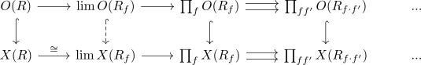
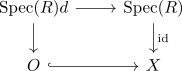
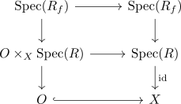

open subfunctor of a zariski sheaf is a zariski sheaf
Proposition
Let $X: \mathrm{CAlg} \rightarrow \mathrm{Set}$ be a sheaf for the Zariski topology on CAlg and $O \subseteq X$ an open subfunctor. Then $O$ is also a zariski sheaf.
Proof
using sheaves on the zariski topology: Let $(R \rightarrow R_f)_{f \in I}$ be a zariski cover, such that $(f)$ generates the unit ideal.
Then we have a diagram

and we need to show that $O(R) \rightarrow \lim O(R_f)$ is an isomorphism Here it is a monomorphism as the composition $O(R) \rightarrow \lim O(R_f) \rightarrow \lim X(R_f)$ is a monomorphism.
Therefore it remains to show that it is surjective: Let $x \in \lim O(R_f) \subseteq \lim X(R_f) \cong X(R)$ be an element.
Then we need to show that there exists a pullback digaram

(cf. element criterion for subfunctors).
Furthermore we have a pullback diagram

is a pullback diagram, since $x_{\vert R_f} \in O(R_f)$
Now $O$ is classified by some quasi-coherent radical ideal (cf. classification of open subfunctors of an algebraic functor) $I$ and this quasi-coherent radical ideal $I$ restricts to $R_f$ when evaluated at $R_f$ (since $x_{\vert R_f}$ lies in $O(R_f)$. We want to show that $O \times_{X} \mathrm{Spec}(R) \hookrightarrow \mathrm{Spec}(R)$ is an isomorphism, i.e. $I$ evaluated at $R$ is the ideal $R$. Let $J$ be the image of $I$ in $\mathrm{Rad}(R)$, then we have that $\sqrt{(J \otimes_{R} R_f)} = J \otimes_{R} R_f$ (cf. localization of a radical ideal is radical). In particular, we may apply zariski descent for modules to see that $J = R$ is the only possibility.